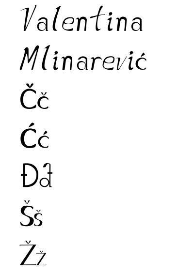
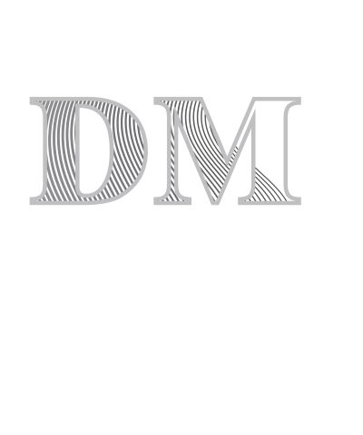
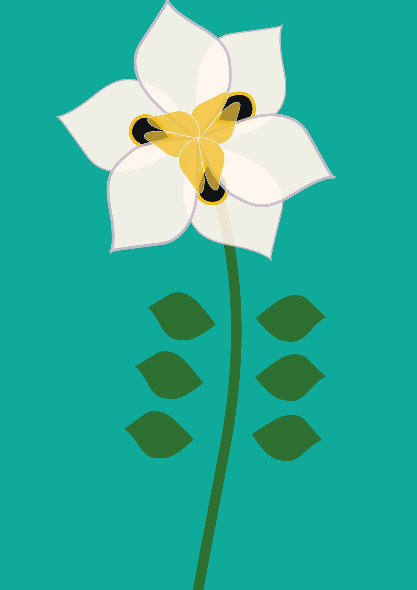
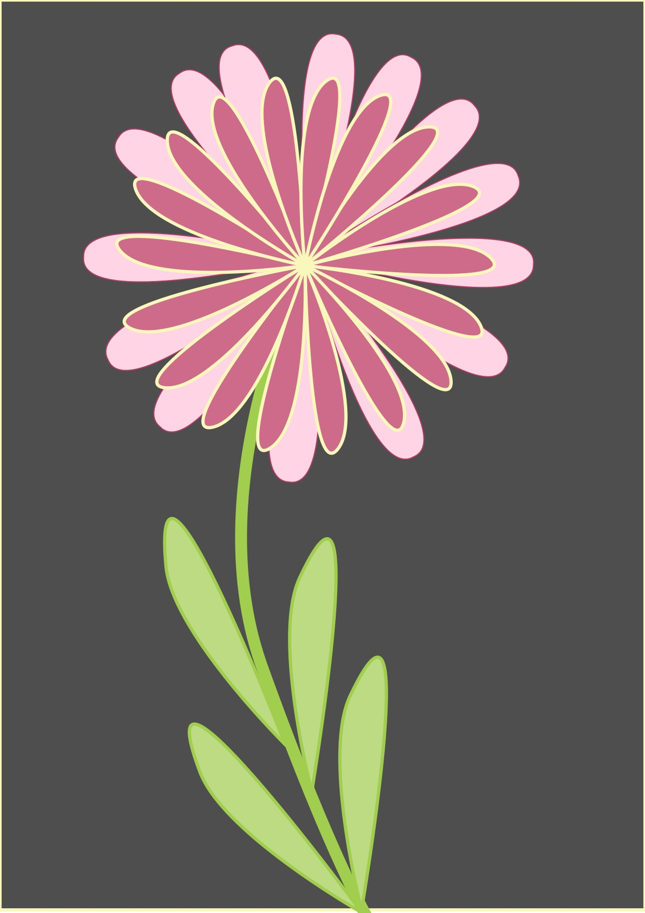
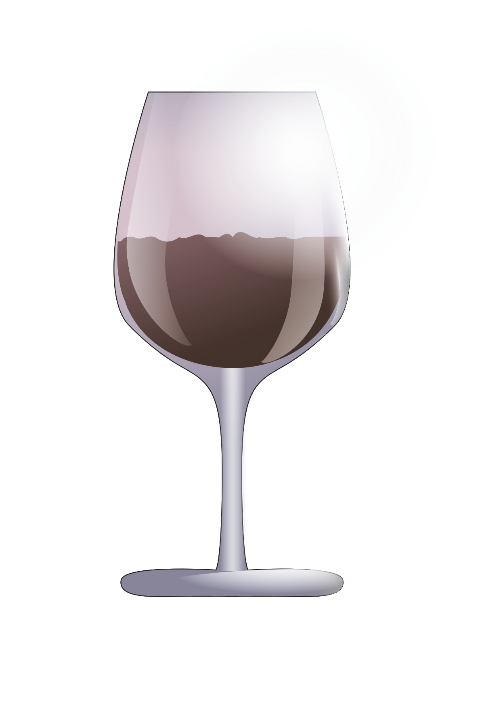
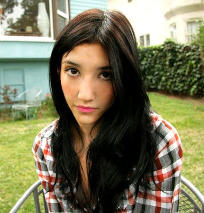
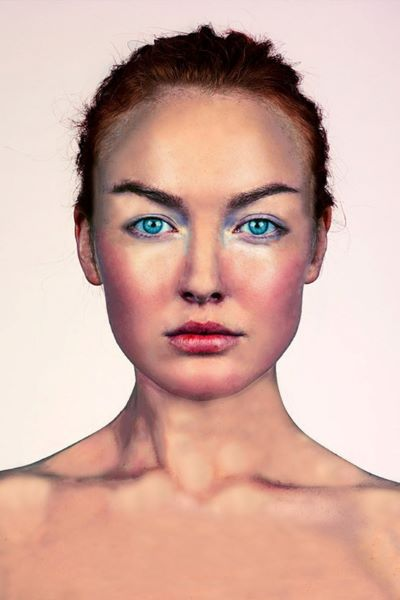
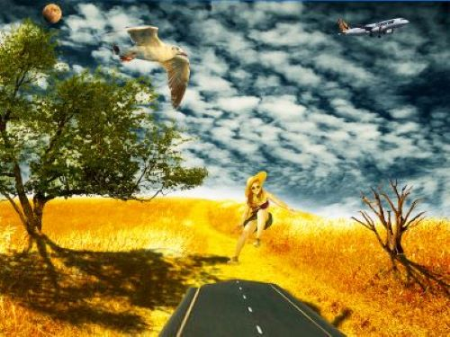

U programu Font Forge napravili smo svoj vlatiti font.
U Adobe Illustrator-u napravili smo Bezierovu krivulju u našim inicijalima.
Pomoću Pen alata crtali smo objekte nad kojima smo izvršavali transformacije, multipliciranje i grupiranje.
 Izradili smo složene objekte koji se sastoje od više staza, spojili ih metodama spajanja ili im oduzeli oblike; dodali različite gradijente...
U vježbi smo koristili Lasso Tool, tehniku digitalnog retuširanja kako bi dobili realistične efekte, uklanjali smo nedostatke na slikama i radili korekciju boja.
 Koristili smo tehniku neinvazivnog koloriranja slike na crno-bijele slike ili na slike u boji. Mijenjali smo nijanse pojedinih područja. Selekcijom stvaramo maske kojima skrivamo ili otkrivamo efekte kolorizacije.

.jpg)
Korisitli smo tehniku fotomotaže tako što smo kombinirali više slika, selektirali pojedine dijelove, maskirali i lijepili ih u željenu sliku. Koristili smo alate Brush i Eraser.
Koristili smo se osnovama obrade video materijala, uvezli multimediju i od nje pravili kinemagraf, koji spaja statičnu i pokretnu sliku.

Rezali smo i spajali video isječke iz više izvora, dodavali različite efekte, dodavali pomični i statični tekst.